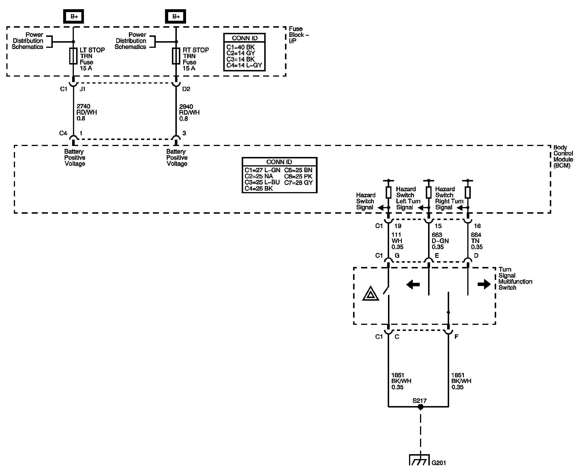

Exterior Lights Diagram 5

Next Diagram: Exterior Lights Diagram 6
Previous Diagram: Exterior Lights Diagram 4
Locations: The locations for the Connectors, Grounds, Splices, and Grommets shown within these diagrams can be found via their numbers at Vehicle Locations. Locations